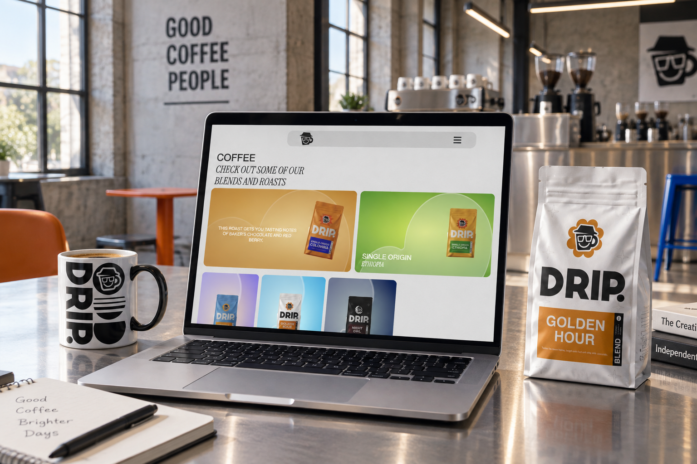
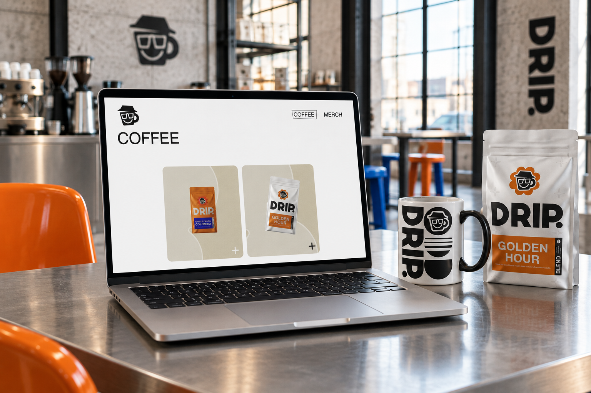
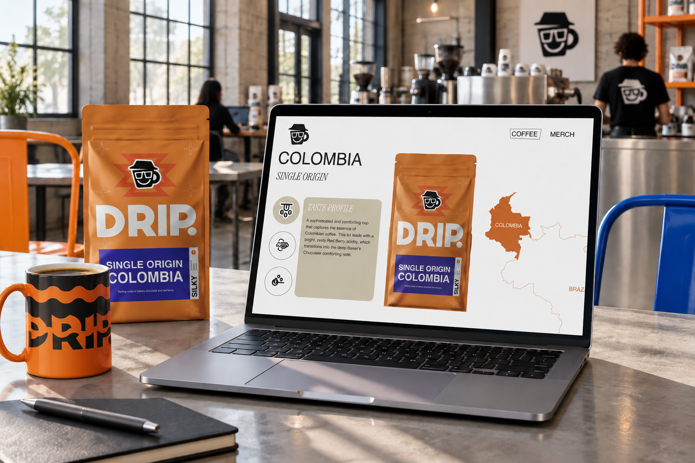
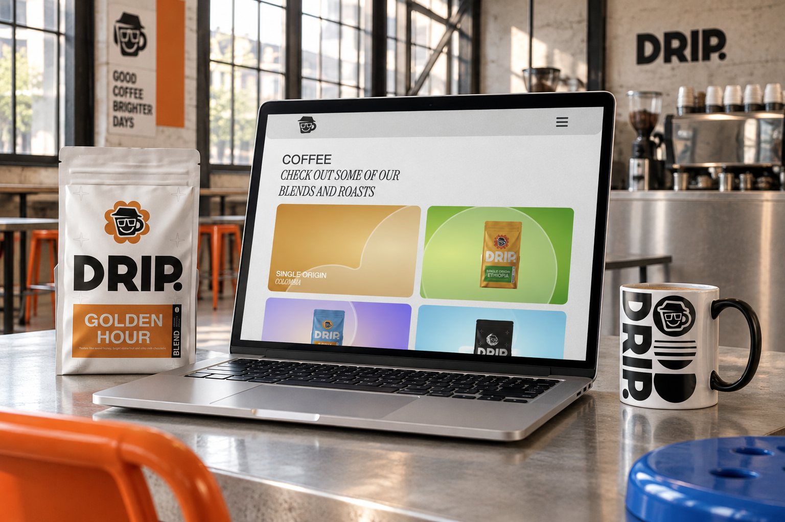
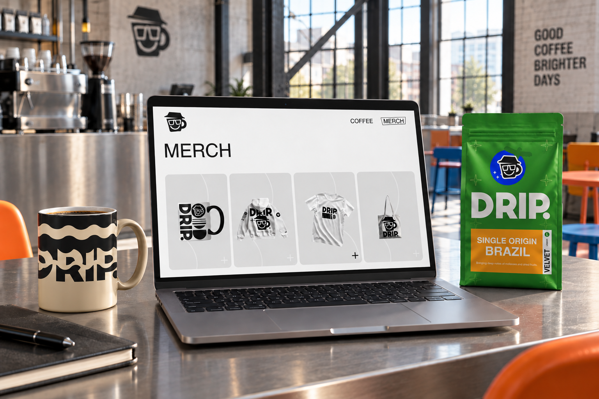
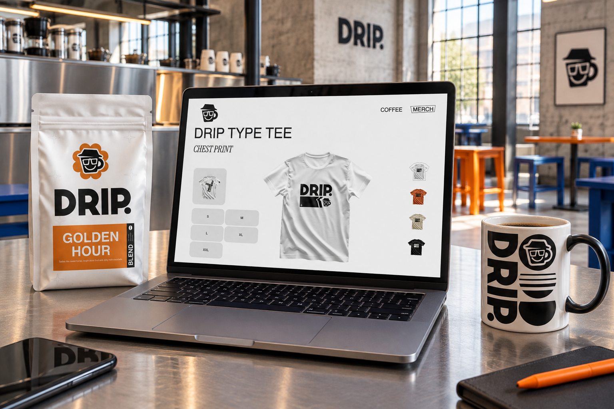
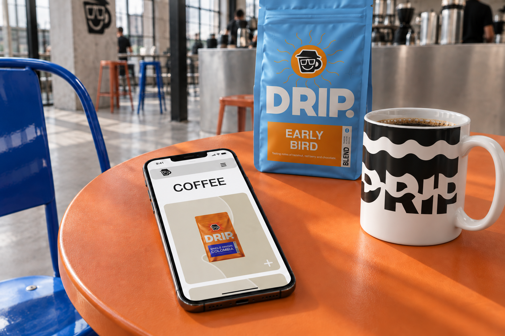
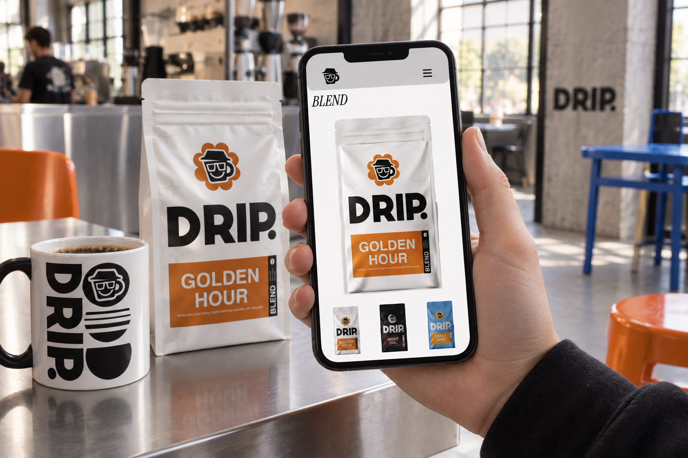
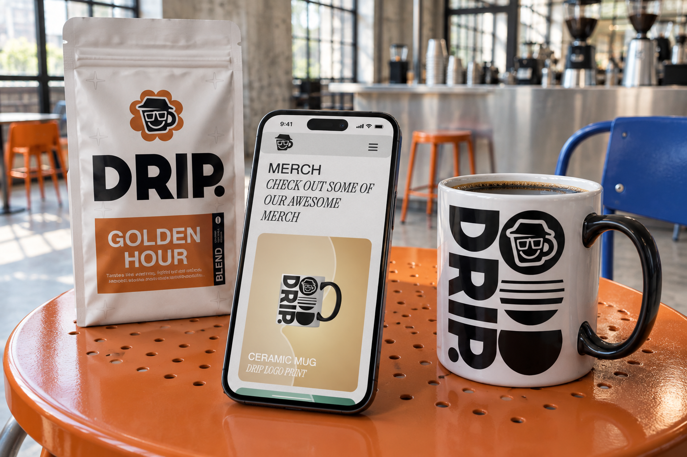
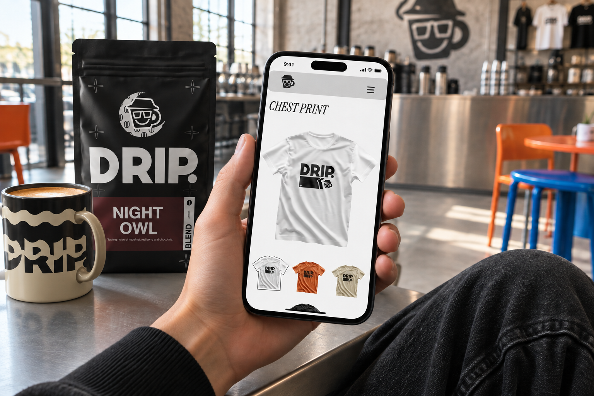

02 / COFFEE, COLOUR & CHARACTER
Drip.
From the coffee bag to the browser.
Drip. is an independent coffee brand concept with a playful attitude. I developed its identity, packaging and merchandise alongside a working website, bringing the same character to every place the brand appears.
VISIT PROJECT ↗
01 / THE BRAND
Colour meets concrete.
I imagined Drip. in a bright, post-industrial space: exposed concrete, iron and steel, with colour bringing energy to the room. The cup mascot, bold wordmark and playful graphics carry that attitude across the brand. These concept mockups place the website alongside my packaging and mug designs.


02 / THE COFFEE
Give each coffee its own identity.
The packaging uses different colours and graphics to distinguish blends and origins, while the mascot and wordmark keep them recognisably Drip. On the website, product imagery leads into detail pages with information about the coffee and its taste profile.

03 / BEYOND THE BAG
A brand you can wear. Or drink from.
Mugs, T-shirts, hoodies and tote bags extend the identity beyond coffee packaging. The merchandise pages let visitors browse the range and explore product variations, keeping the products themselves at the centre of the layout.


04 / ON MOBILE
The same character, in your hand.
The mobile layouts bring the products into a single-column flow with compact navigation. Large images keep packaging and print details visible, while coffee and merchandise retain the same visual language as the desktop experience.




TRY IT LIVE ↗
Find your blend. Pick your colour.
Open Drip. to explore the coffee range, read the origin and tasting details, and try the merchandise options. The live website brings the brand, products and interactions together.
Use “Visit project” in the top bar to explore the full website.